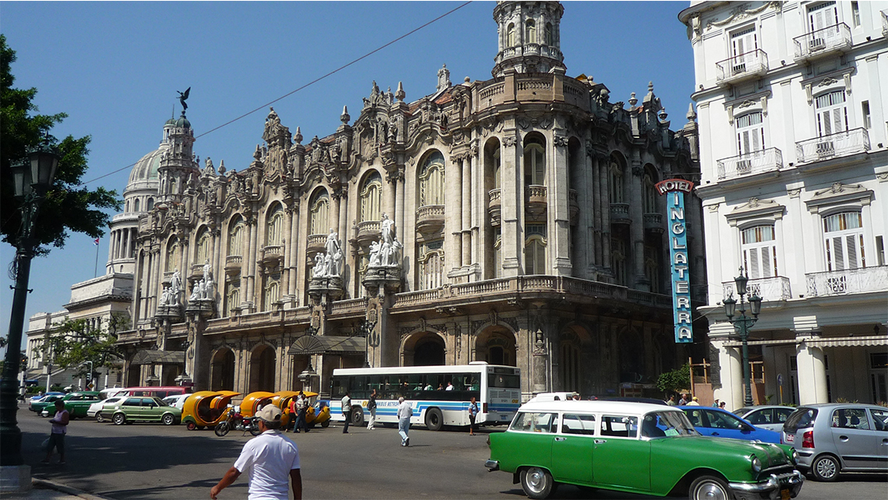

“Soluciones a los temas polémicos que originan las diferencias y discrepancias existentes entre la vertiente Yoruba descendientes de Cuba y la vertiente Yoruba de África”

Centro Cultural Casa de la Poesía
Calle Muralla #63 entre Oficios e Inquisidor, Centro Histórico de La Habana Vieja
La Habana, Cub
¿Quiénes somos?
“Los labios de la sabiduría solo se abrirán para quienes tienen sus oídos debidamente preparados y solo hallara cabida en el pensamiento de los hombres de corazón limpio y puro, de aquellos que han sido elegidos por virtud y designios de Olodumare”
La Confederación de Hispanoparlantes de la tradición Orisa/ Ifa es una hermandad que pretende ser entre los hispanoparlantes una voz educativa comprometida dentro de la fe Ifá/ Orisa. Posee el apoyo de muy reconocidos sacerdotes e investigadores de la tradición indígena Yoruba en diversos países, especialmente Nigeria, Estados Unidos, Puerto Rico, México, Cuba, Venezuela, Panamá y Colombia.
La Confederación de Hispanoparlantes de la tradición Orisa/ Ifa mantiene una mirada atenta y creativa enfocada al desarrollo cultural y religioso entre los devotos de la fe indígena del grupo étnico Yoruba
La Confederación de Hispanoparlantes de la tradición Orisa/ Ifa es una voz más dentro de la fe Ifá/ Orisa
No somos la voz de la fe Ifá/ Orisa
Buscamos ser para los fervorosos de Ifá/ Orisa una voz comprometida, una voz significativa en la sociedad y una voz libre, clara, respetuosa y propositiva. Buscamos continuamente ser un espacio de innovación, desarrollo, aplicación y formación para artículos de investigación, análisis, creación y reflexión relacionados únicamente a la tradición Yoruba del África Occidental
Las conferencias que serán impartidas en el marco del primer evento de la Confederación de Hispanoparlantes de la tradición Orisa/ Ifa a celebrarse del 1 al 3 de Junio del 2015 en la Habana, Cuba, serán totalmente gratuitas y estarán basadas en ensayos prácticos para investigadores, devotos, sacerdotes y sacerdotisas de la fe indígena del grupo étnico Yoruba.
El objetivo principal de este primer encuentro es que las diferencias y discrepancias existentes entre los practicantes de la vertiente Yoruba descendientes de Cuba y los practicantes de la vertiente Yoruba de África, no sigan con lo que se ha tornado en una revolución religiosa. Al respecto, los miembros de la Confederación de Hispanoparlantes de la tradición Orisa/ Ifa consideramos que para evitar que continúen los conflictos, la postura que todo sacerdote o sacerdotisa debe mantener, es tratar de unificar y no de diferenciar o distar ambas prácticas religiosas, pues el comparar o diferenciar, lejos de crear un entorno religioso armonioso, crea un ambiente de conflicto totalmente innecesario y contrario a los preceptos y leyes de esta bella religión. Creemos que lo que los involucrados en esta hermosa tradición debemos hacer, es intercambiar nuestras experiencias
Cabe destacar que a través de los maestros conferencistas, los interesados aprenderán a recuperar para nuestra religión aquel papel central en el desarrollo social y cultural que le es propio, pero que lamentablemente entre muchas comunidades ha sido relegado. Muy a pesar de la riqueza cultural que posee nuestra religión, en la actualidad el desinterés por integrar el crecimiento espiritual y la conservación del patrimonio cultural Yoruba se profundiza y se expande. Tal tendencia se constituye finalmente en un grave obstáculo para todo intento de redimir a nuestra religión de la charlatanería y la ignorancia religiosa.
Si desea coordinar alguna conferencia en este primer evento, favor de enviar la información del tema que desean abordar y los datos de contacto